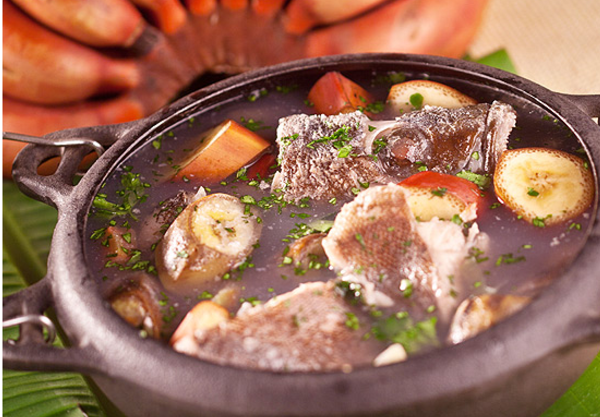
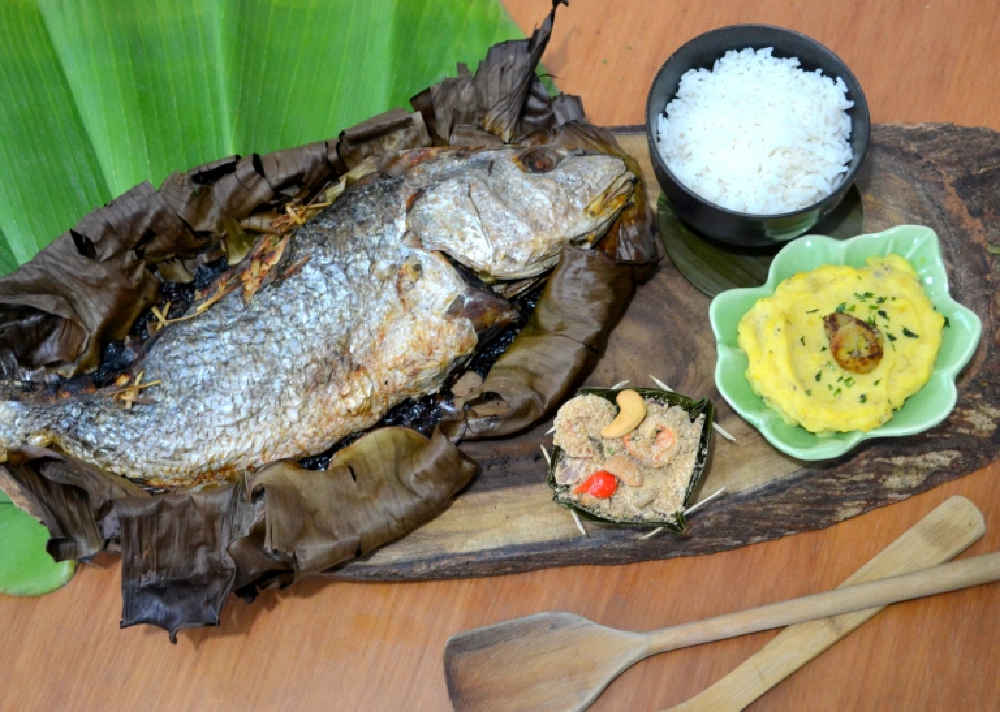
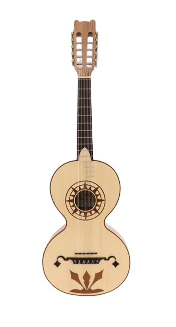
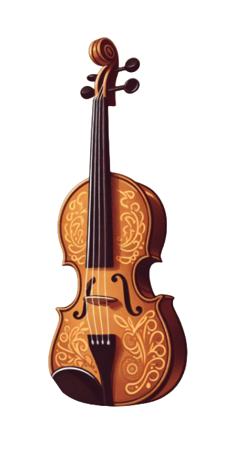
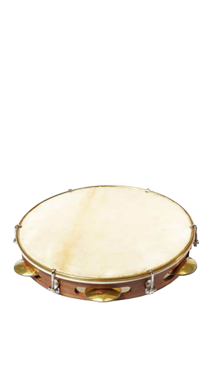
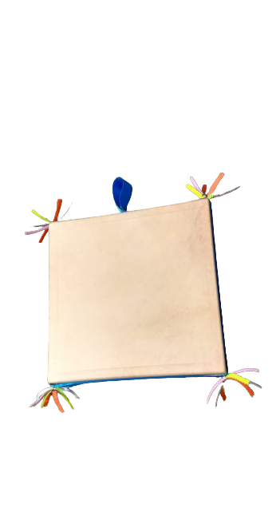

A alimentação é primordial para as comunidades costeiras do Brasil, sendo mais do que uma expressão gastronômica, mas parte vital da identidade cultural. Transmitida de geração em geração, as tradições incorporam práticas únicas e técnicas que mantêm a identidade dos sabores locais. Destaca a pluralidade de sabores e também a importância da preservação ambiental para garantir a continuidade desses pratos.
Culinária Caiçara

Azul Marinho
O prato recebe esse nome pela reação química que ocorre durante o cozimento, que dá ao caldo uma cor azulada.

Caldeirada
Essa receita é um ensopado de frutos do mar que inclui muitos ingredientes e temperos tradicionais.

Peixe Assado
Cozido em uma grelha ou no forno, a folha de bananeira adiciona um sabor e aroma únicos ao peixe

Azul Marinho, prato de peixe cozido com banana verde
O Azul Marinho, distinto na culinária caiçara, é uma criação que destaca os sabores autênticos do mar. Essa iguaria harmoniza a frescura de peixes como robalo e badejo com a riqueza de frutos do mar, como camarões e lulas. A união perfeita desses elementos é complementada por ingredientes locais como tomate, cebola e coentro, resultando em um guisado que captura a essência fresca e autêntica dos ingredientes marinhos, o prato é feito em uma panela de ferro, que quando em contato com a banana cria uma reação química.
Caldeirada Caiçara de frutos do mar
A Caldeirada, que normalmente é servida com arroz branco e molho, é um cozido exuberante de frutos do mar e peixes variados. Essa iguaria é uma celebração da diversidade marinha, combinando peixes como pargo e linguado, frutos do mar como polvo e camarões, e vegetais frescos, como batatas, tomates e pimentões. O cozido revela uma sinfonia de sabores, destacando a variedade e paladar dos ingredientes trazidos pelos pescadores.
Peixe Assado servido na folha de bananeira
O prato é comumente servido com arroz e legumes e é uma preparação encantadora que destaca a suculência do peixe, que é cozido em uma grelha ou no forno. Ao envolver o peixe inteiro, como tainha ou robalo, em folhas de bananeira, preserva-se os sabores naturais do tempero local, com alho, limão e coentro, realçando a riqueza do peixe, tornando a iguaria suculenta e perfumada, sendo popular nas regiões costeiras do Brasil, onde peixes e bananeiras são abundantes.
Religião e Ritos
A religião na comunidade caiçara se destaca pela sua natureza sincretista e predominantemente Católica, combinando influências culturais e espirituais de maneira única. Muitos caiçaras seguem uma forma de religiosidade que entrelaça elementos do catolicismo tradicional com crenças e rituais indígenas. A natureza ocupa um papel central nessas práticas, sendo considerada sagrada e intrinsecamente ligada às atividades diárias. Para além das práticas católicas convencionais, alguns deles incorporam elementos das religiões afro-brasileiras e indígenas, resultando em uma espiritualidade adaptada à sua realidade local. A crença na proteção divina durante as atividades marítimas e o respeito às forças da natureza são fundamentais na religiosidade tradicional.
Música e Instrumentos
A música caiçara é rica e usa uma variedade de instrumentos tradicionais, criando uma atmosfera única e envolvente.A música caiçara é rica e incorpora uma variedade de instrumentos tradicionais, criando uma atmosfera única e envolvente.

A viola caiçara é uma versão adaptada da viola tradicional brasileira, usada em músicas populares e folclóricas.

A rabeca é semelhante a um violino mas tendo três cordas, é usado especialmente nos eventos caiçaras.

O pandeiro é um instrumento de percussão essencial nas expressões musicais, oferecendo a base rítimica.

O adufo é um pequeno tambor com peles em ambos os lados que é tocado através de batidas com as mãos.
Dança das Fitas
Esta é uma dança folclórica tradicional que também aparece na festa do caiçaras. Nesta dança, os participantes seguram fitas coloridas e, em movimentos coordenados, tecem-nas em padrões intrincados. Esta dança não só acrescenta um ambiente festivo à celebração, mas também simboliza a unidade e interligação dos participantes. A dança da fita é uma expressão alegre que complementa as muitas expressões da arte caiçara.
Congada
A congada é uma dança de origem africana, presente nas comunidades caiçaras. É uma dança folclórica que representa a luta entre mouros e cristãos, com influências religiosas. Os dançarinos se vestem com trajes coloridos e fazem movimentos ritmados ao som de tambores e instrumentos de percussão.
Fandango
O Fandango Caiçara é uma expressão cultural vibrante, presente nas comunidades costeiras do Brasil, além de ser uma expressão artística, a festividade é celebrada ao som de instrumentos como o adufo e a viola e fortalece os laços comunitários e celebra a identidade caiçara. Foi reconhecido oficialmente como Patrimônio Cultural Imaterial do Brasil desde 2013.
São Gonçalo
O dia de São Gonçalo é uma celebração caiçara que ocorre em 10 de janeiro. Nesse dia, as paróquias locais realizam a tradicional dança de São Gonçalo, onde os dançarinos se alternam, cantando e movendo-se para a esquerda e para a direita. No final, pode-se formar uma roda onde o promesseiro dança segurando uma imagem do santo, que é retirada do altar.
Santa Cruz
A Festa de Santa Cruz é uma celebração significativa da comunidade caiçara em homenagem a Santa Cruz, combinando cerimônias religiosas e atividades culturais. Além de enfatizar a fé e a conexão espiritual com a natureza, o festival também fortalece as relações comunitárias e expressa a identidade cultural caiçara, enriquecendo as tradições locais.